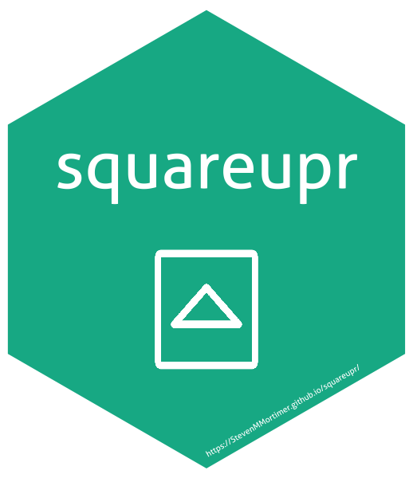

squareupr is an R package that connects to Square APIs (Connect v1 & v2).
- OAuth 2.0 (Single sign-on) and Personal Acces Token Authentication methods (
sq_auth()) - v2 Locations Endpoint
- v2 Customers Endpoint
- v2 Transactions Endpoint
- v1 Payments Endpoint
- v1 Orders Endpoint
Installation
# This package is not yet available on CRAN so you must install from GitHub
# install.packages("devtools")
devtools::install_github("StevenMMortimer/squareupr")If you encounter a clear bug, please file a minimal reproducible example on GitHub.
Usage
Authenticate
First, load the squareupr package and login. There are two ways to authenticate:
- OAuth 2.0
- Personal Access Token
It is recommended to use OAuth 2.0 so that passwords do not have to be shared or embedded within scripts. User credentials will be stored in locally cached file entitled ".httr-oauth-squareupr" in the current working directory.
suppressWarnings(suppressMessages(library(dplyr)))
library(squareupr)
# Using OAuth 2.0 authentication
sq_auth()
# Using Personal Access Token (PAT)
sq_auth(personal_access_token = "{PERSONAL_ACCESS_TOKEN_HERE}")After logging in with sq_auth(), you can check your connectivity by looking at the information returned about the current user. It should be information about you!
# nothing yet!Credits
This application uses other open source software components. The authentication components are mostly verbatim copies of the routines established in the googlesheets package (https://github.com/jennybc/googlesheets). We acknowledge and are grateful to these developers for their contributions to open source.
More Information
This package makes requests best formatted to match what the APIs require as input. This articulation is not perfect and continued progress will be made to add and improve functionality. For details on formatting, attributes, and methods please refer to Square’s documentation as they are explained better there.